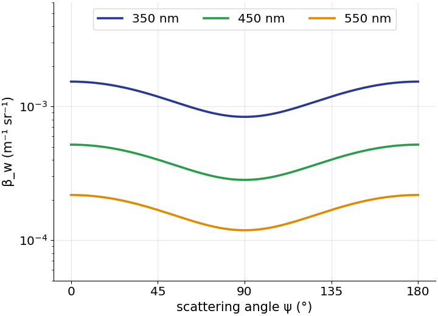
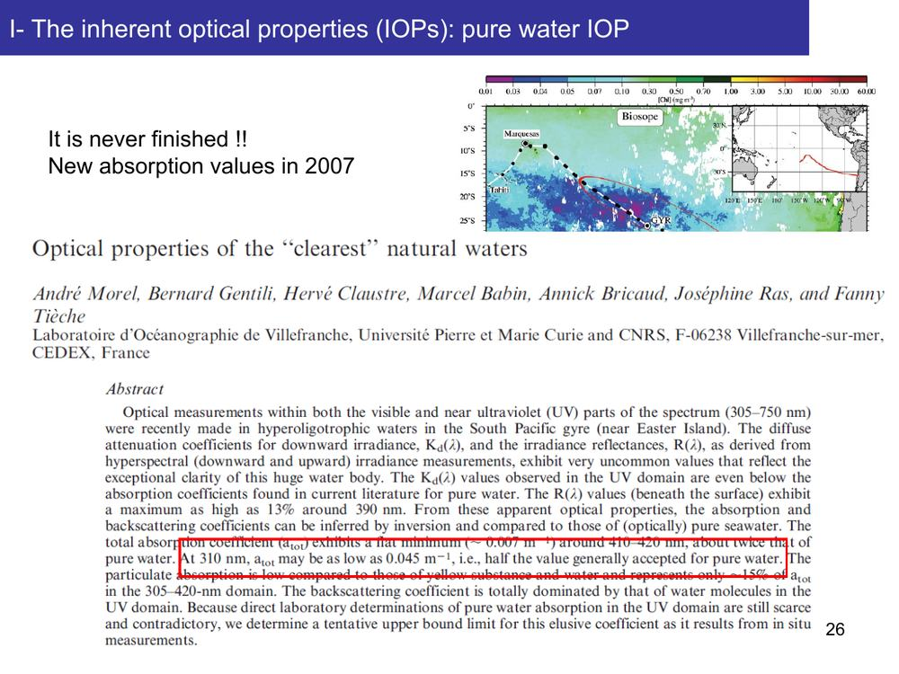

B · Pure water
Pure-water absorption and scattering (slides 20–27)
Pure sea water: scattering formula

Lecture slide 20
- Fit to theoretical calculations
- Salinity factor fixed from lab experiments
- Einstein–Smoluchowski: density fluctuations
- Next slides: term by term
Revision by Buiteveld et al. (1994)

Lecture slide 23
- Amplitude: 1.38 → 1.29
- Spectral exponent: −4.32 → −4.14
- Depolarisation: 0.09 → 0.051
- Refractive index and compressibility
Buiteveld formula, term by term
Einstein–Smoluchowski scattering
Morel (1974) formula, term by term
Total scattering of water
Pure-water VSF versus angle

Own computation from the slide-20 formula, S = 37 (compare lecture slide 22)
Temperature and salinity effect

Lecture slide 21
- Ratio to T = 20 °C, S = 38.4
- Range 0.75 – 1.10
- Salinity matters most
- +30 % for S = 37 (slide 20)
Scattering of pure water: numbers
b_w(500\,\mathrm{nm},S=37)=2.88\times10^{-3}\ \mathrm{m^{-1}}
b_w(500\,\mathrm{nm},S=0)=2.22\times10^{-3}\ \mathrm{m^{-1}}\quad(+30\%\ \text{with salt})
b_{bw}/b_w=0.5\quad\text{(half is backward)}
\frac{b_w(450)}{b_w(550)}=\left(\frac{550}{450}\right)^{4.32}=2.38
\text{with the revised exponent }4.14:\ \ 2.30
Meaning: sea water scatters 30 % more than fresh water, half of it backward, and blue light about 2.4 times more than green.
Pure-water absorption and scattering spectra

Lecture slide 24
- Absorption minimum ≈ 0.005 m⁻¹ near 415 nm
- Absorption rises beyond 550 nm
- Scattering falls smoothly with λ
- Curves cross near 430–440 nm
Absorption in the blue and UV is uncertain

Lecture slide 25
- Five data sets
- Smith & Baker ≈ 3× higher at 415 nm
- New UV data (1994)
The clearest natural waters

Lecture slide 26
- Total absorption ≈ 0.007 m⁻¹ at 410–420 nm
- 0.045 m⁻¹ at 310 nm
- Half the accepted pure-water value
- Particles ≈ 15 % of the total
Key points
- Scattering almost Rayleigh (λ⁻⁴·³); half of it backward
- Salinity: +30 %; temperature: weak
- Absorption minimum in the blue, strong rise in the red
- Blue/UV absorption: data sets still disagree